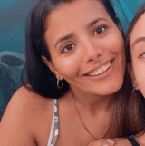

LA ESPOSA DEL INVERSOR
Francesca Novello de Bellucci
Interpretada por Pau
Francesca Novello de Bellucci es una socialité nata. Desde temprana edad supo como tratar a las personas. Tiene un talento natural para escuchar y ser cortés. Es tal vez por eso que al conocerse con Alessandro (El Inversor) su intuición le aseguró que este era el compañero que había buscado toda la vida.
EL BANQUERO, ESPOSO DE LA KARDASHIAN
Marco Capelletini
Interpretado por Mauro
Marco (El Banquero) aprendió a contar tan solo con 1 año de edad. Desde esa edad ya sabía que los números eran lo suyo. El 1 es 1, pero si ponemos un 0 se multiplicó por 10. Que maravilla. Pasó de 1 a 10 con un pequeño cambio.